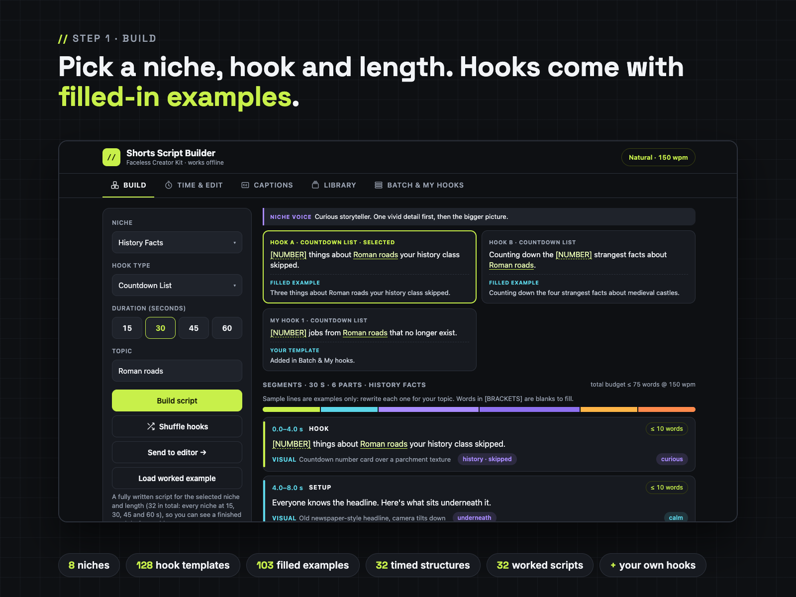
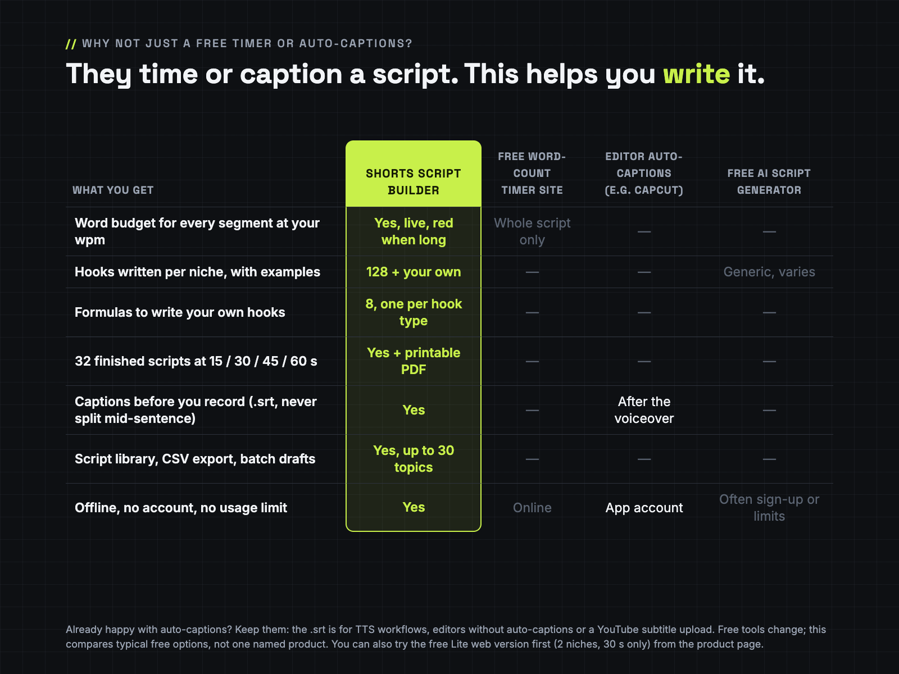
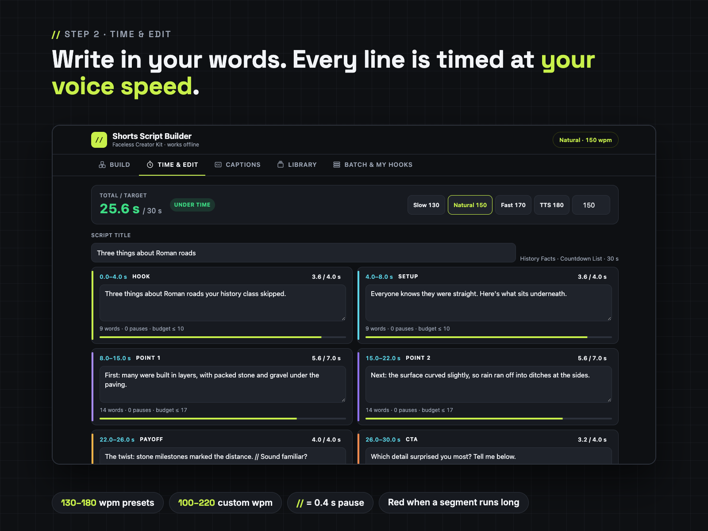
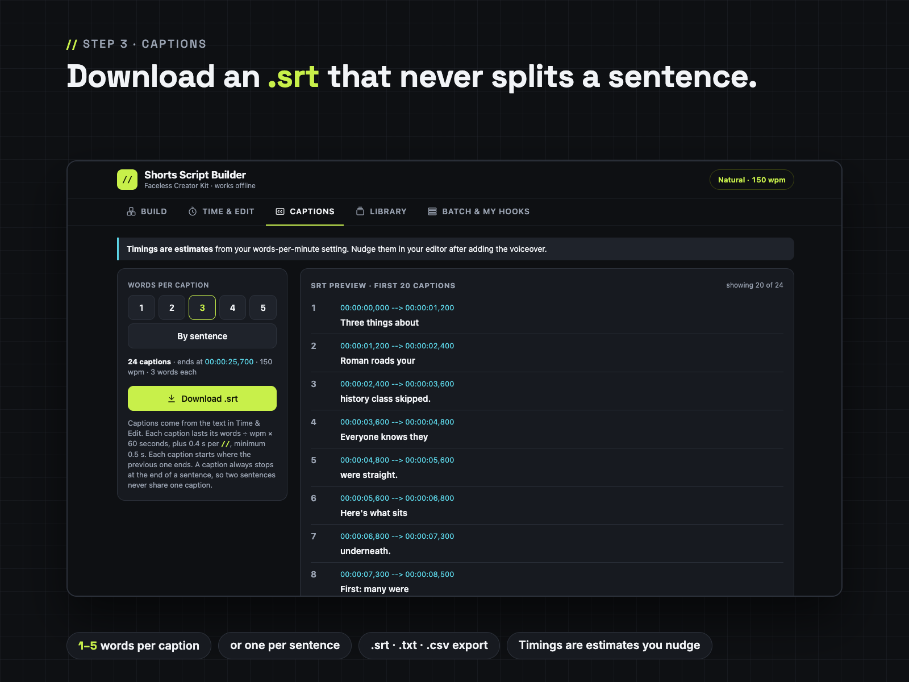
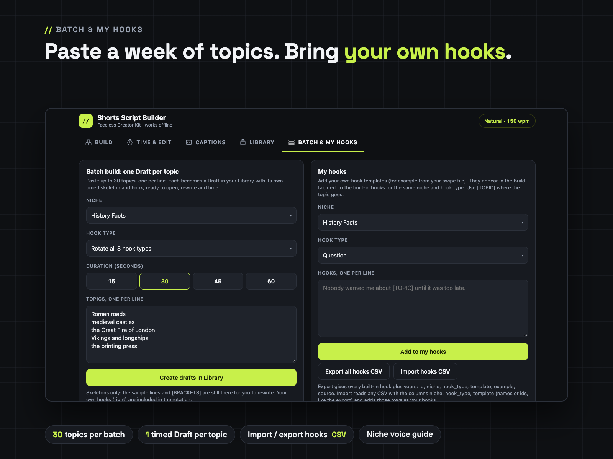
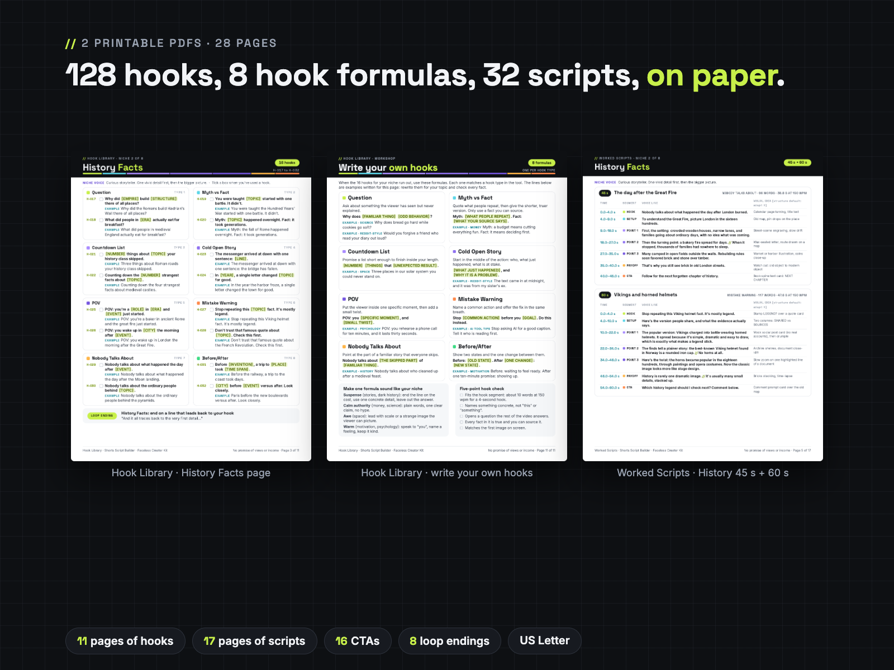

Pick a niche, hook type and length. Get a second-by-second Shorts script skeleton, time every line to your voice speed, batch a week of drafts and export .srt, .txt or .csv.
One offline HTML tool plus 2 printable PDFs (128 hooks, 8 hook-writing formulas and 32 finished scripts), for faceless YouTube Shorts, TikTok and Reels. No AI, no sign-up, no usage limits. The tool file is called Shorts Script Builder (Shorts-Script-Builder.html). From Faceless Creator Kit, the creator-tools imprint of Hustle Studio.

$12.00 USD, one-time, instant download · 14-day no-questions refund
Buy now: $12 Try the free Lite version Free sample pages🔒 Secure checkout by Waffo Pancake, our merchant of record: they process the payment and send your receipt. We never see your card details. You go straight to the download page after payment.
↩️ 14-day refund, no questions asked. Email chenphien@gmail.com within 14 days of purchase and we refund you in full through Waffo Pancake (see Terms).
✅ Satisfaction guarantee. If the tool won't open on your computer, or anything doesn't match this page, you get a full refund. Not sure about a locked-down work computer? Open the free Lite version there first: it's also a single HTML page.
🛠️ Bugs get fixed, updates are free. Report a bug by email and we fix it. Fixed or updated files go on your download page at no extra cost; bookmark it after you buy. Your scripts stay safe across updates if you use Backup .json.
🆕 New shop, honest about it. This tool is new, so it has no reviews yet, and we won't invent any. Try the workflow in the free Lite version, read 3 real pages from the printables, and tell us what you think: early feedback by email decides what we improve first. Every screenshot below comes from the real file.
| Free Lite (web page) | Full ($12) | |
|---|---|---|
| Niches | 2 (Reddit-Style Stories, History Facts) | 8 |
| Hooks | 3 hook types, 12 templates | 8 types, 128 templates + your own (paste or CSV import), CSV export |
| Lengths | 30 s | 15 / 30 / 45 / 60 s (32 timed structures) |
| Worked scripts | none | 32, plus a 17-page printable |
| Timer | fixed 150 wpm, read-only | live per-segment timer, presets or custom 100–220 wpm |
| Export | Copy as TXT | TXT, .srt captions, CSV |
| Library and batch drafts | no | yes (up to 30 topics per batch) |
| Printables | no | Hook Library (11 p), Worked Scripts (17 p), Quick-Start (Letter + A4) |
| Where it runs | any browser, phones included | downloaded HTML file, offline, made for desktop/laptop browsers |
// adds a 0.4 s pause; a segment more than 10 percent long turns red. Paste up to 30 topics and get one timed Draft per topic.





The free sample has the Hook Library contents page, the complete History Facts hook page (16 hooks, H-017 to H-032, with filled examples and the loop ending) and Worked Scripts page 4 (the 15 s and 30 s History scripts, every line timed). Open it in your browser and use Print → Save as PDF to keep a copy.
Open the free sample pagesType a topic → Build a 45 s skeleton → Load the worked example → TTS 180 preset → Captions by sentence → Download .srt → Batch 3 topics into drafts.
| File inside the ZIP | What it is |
|---|---|
Shorts-Script-Builder.html | The tool: one offline HTML file, 5 tabs: Build, Time & Edit, Captions, Library, Batch & My hooks |
Hook-Library-Printable.pdf | 11 pages, US Letter: 128 hooks (numbered, tick boxes, filled examples, niche voice), 16 CTAs, 8 loop endings, and a "Write your own hooks" page with 8 formulas |
Worked-Scripts-Printable.pdf | 17 pages, US Letter: 32 worked scripts (8 niches × 15, 30, 45, 60 s) with times and a visual idea per segment |
Quick-Start-Letter.pdf | 2 pages, US Letter |
Quick-Start-A4.pdf | 2 pages, A4 (same content) |
LICENSE.txt | Personal and own-channel commercial use |
The ZIP is about 1.5 MB. The tool (Shorts-Script-Builder.html) and the 4 PDFs can also be downloaded on their own; LICENSE.txt is inside the ZIP. Not included: no Excel file, no content calendar, no video templates, no voice generator.
Which niches are covered, and how many hooks per niche?
8 niches: Reddit-Style Stories, History Facts, Science Facts, Space Facts, Psychology Facts, Money Basics (general info, not advice), Motivation and AI Tool Tips. Each has 16 built-in hook templates (8 hook types × 2), 128 in total. You can add your own hooks to any niche and hook type.
Can I import my own hooks?
Yes. In Batch & My hooks, paste hooks one per line or import a CSV with the columns niche, hook_type, template. They appear in the Build tab next to the built-in hooks. You can also export all hooks (built-in and yours) as CSV.
Can it batch-generate a week of scripts?
It batch-creates skeletons: paste up to 30 topics and get one timed Draft per topic in your Library, with the hook and topic filled in. The other sample lines and [BRACKETS] are still there for you to rewrite. Each script is up to 60 seconds (15, 30, 45 or 60 s); no multi-part series.
Does it work offline, and on my phone?
It works offline in a desktop or laptop browser (Chrome, Edge, Firefox, Safari): one HTML file with no outside links, fonts or tracking. The layout fits a phone screen, but we have not tested saving and downloads from a local HTML file on iPhone or Android, and the iPhone Files preview does not run it. Use a computer for the full tool. The free Lite version works in phone browsers.
How accurate are the timings?
They are estimates: words ÷ your words per minute × 60, plus 0.4 s per //, each caption at least 0.5 s. Measure your speed once (read a 30-second script, double the word count) or use the preset that matches your TTS voice. Nudge captions in your editor after adding the voiceover.
I already use CapCut auto-captions. Do I need the .srt?
Not necessarily. Keep auto-captions if they work for you. The .srt is for text-to-speech workflows, editors without auto-captions, or a YouTube subtitle upload. The main reason to buy is writing to time: word budgets per segment, niche hooks, 32 finished scripts and batch drafts.
Where are my scripts kept?
In your browser on your own device. Clearing browser data or switching browsers starts an empty library, so use Backup .json now and then and Restore .json on another computer.
Will it open on my work computer?
Usually yes: it's a single HTML file that runs in Chrome, Edge, Firefox or Safari with no install, no admin rights and no internet. Some company computers block opening local files or downloads; test the free Lite page there first. If the full tool still won't open for you, email us within 14 days for a full refund.
Will the file or the hook library be updated? Who fixes bugs?
We do. Email a bug and we fix it; fixed or updated versions go on your download page, free. Before you replace the file with a new version, press Backup .json; if the library looks empty in the new file, press Restore .json and everything is back. The same backup protects you when you clear your browser data. We don't promise a schedule of new hooks; you can add your own hooks any time in Batch & My hooks.
Can I use the scripts on monetized channels?
Yes. Scripts you write with the tool are yours to publish and monetize on your own channels. You may not resell or share the HTML file or the PDFs. See LICENSE.txt.
How do I pay and download?
Checkout runs through Waffo Pancake, which sends your receipt. After payment you go to a download page with the ZIP and the PDFs. Questions: chenphien@gmail.com, we reply within 2 business days.
$12.00 USD, one-time · 14-day no-questions refund
Buy now: $12🔒 Secure checkout by Waffo Pancake, our merchant of record. Tool won't open or doesn't match this page? Full refund.
No promise of views or income. Templates help you write original scripts. Faceless Creator Kit / Hustle Studio is independent and not affiliated with YouTube, TikTok, Instagram or CapCut.